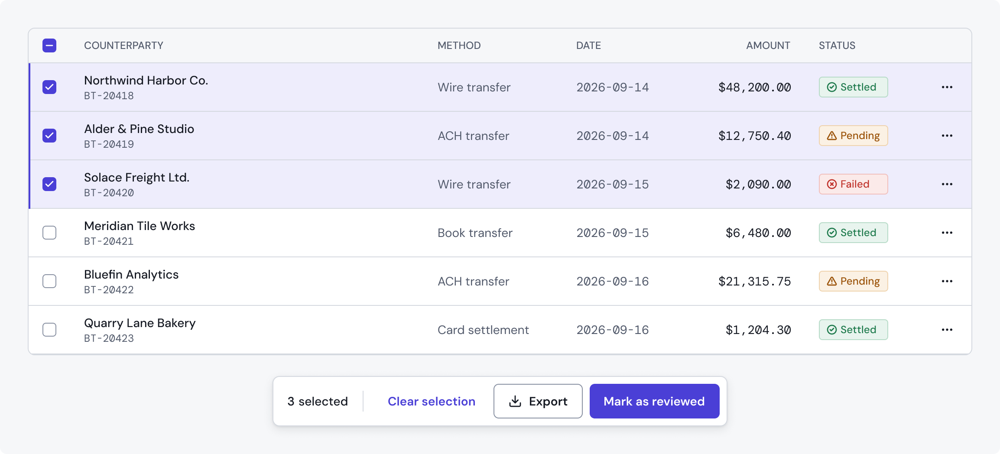
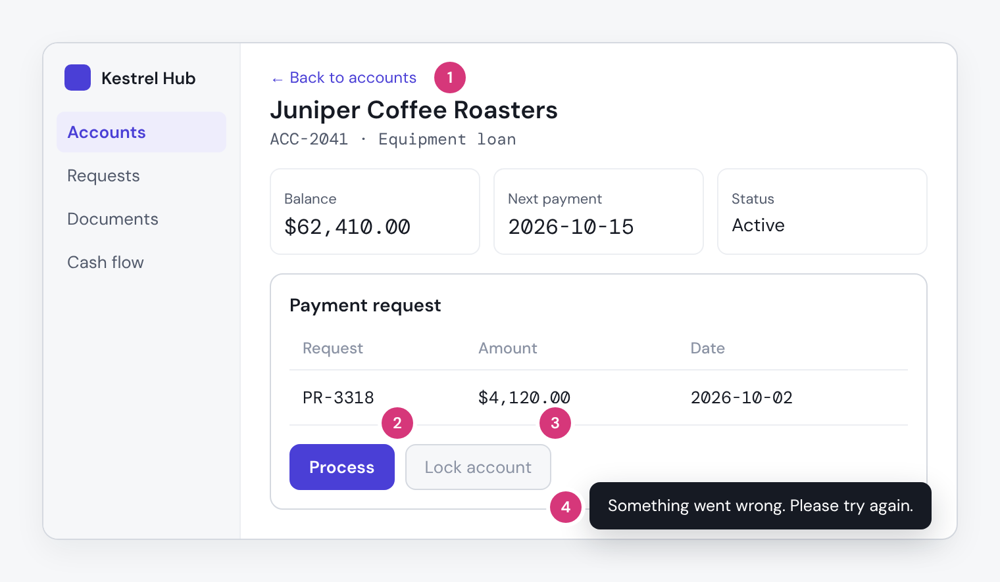
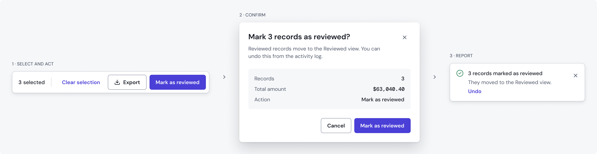
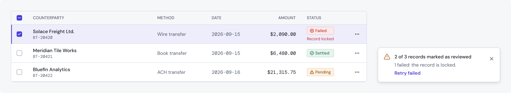
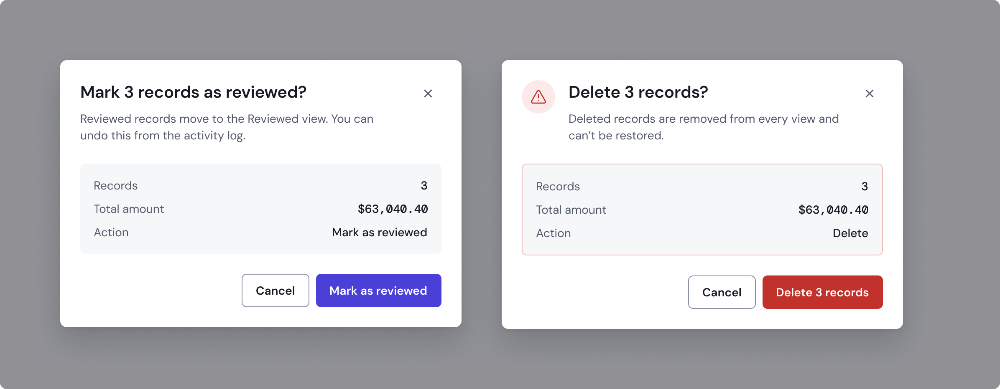
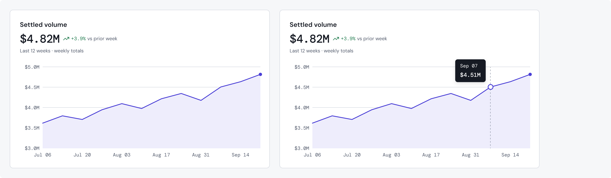

Convertir operaciones una por una en acciones masivas seguras
Los agentes de operaciones procesaban solicitudes de pago y bloqueos de cuenta una cuenta a la vez. Diseñé la plataforma de servicing en la que trabajan y las acciones masivas que reemplazaron ese trabajo.
- Rol
- Product design, del mapeo de flujos de trabajo a la UI en producción
- Equipo
- 2 diseñadores, ~8 ingenieros, Director de Producto
- Periodo
- 2023–2025
- Usuarios
- 40–50 personas de operaciones y underwriting
Los visuales son reconstrucciones hechas con Kestrel UI, una marca ficticia con datos ficticios. Muestran los principios del trabajo, no las pantallas reales de la empresa.


Contexto
Dar servicing a un solo préstamo PyME implicaba saltar entre herramientas separadas: resúmenes de cuenta, solicitudes, documentos y análisis de flujo de efectivo vivían cada uno en su propio lugar. Quantum Hub los reunió en una sola plataforma, y yo diseñé sus fundamentos de UI.
El problema
Los agentes manejaban alrededor de 70 cuentas al día (estimación mía). Los entrevisté y observé directamente, y realicé sesiones con stakeholders de operaciones para mapear cómo trabajaban en realidad. Surgieron dos problemas:
Las solicitudes de pago y los bloqueos de cuenta se procesaban uno por uno: abrir, revisar, actuar, confirmar, volver a la lista.
Detectado en: observación y entrevistasLas herramientas no decían con claridad qué iba a pasar, qué había fallado ni qué tenía permitido hacer el agente.
Detectado en: observación y entrevistasUna cuenta a la vez, luego todas de una
Antes, repetido por cada cuenta
- Abrir la cuenta
- Revisarla
- Actuar sobre ella
- Confirmar
- Volver a la lista
Después, una vez por lote
- Seleccionar las cuentas
- Actuar una vezUna acción masiva
- Confirmar
- Revisar el resultadoFallas listadas
Para quién diseñamos
Trabaja las solicitudes de pago y los bloqueos de cuenta del día.
“Cuando trabajo las solicitudes de pago y los bloqueos de cuenta del día, quiero actuar sobre muchas cuentas a la vez y ver qué va a cambiar, para sacar mi volumen rápido y saber que cada cambio llegó a la cuenta correcta.”
Frustración: repetir el mismo ciclo cuenta por cuenta, con un sistema que no decía qué iba a pasar, qué falló ni qué tenía permitido hacer.
Supervisa el volumen diario del equipo.
“Cuando mi equipo procesa el volumen del día, quiero ver qué cambió y qué falló en cada lote, para mantener el control sin revisar cuenta por cuenta.”
Frustración: sin reporte por lote, los errores aparecían tarde y había que revisarlos cuenta por cuenta.
Formato JTBD: cuando [situación], quiero [motivación], para [resultado esperado].
Qué fue primero
Priorizamos según la frecuencia de cada tarea. También llegaba feedback continuo a través de los managers de operaciones, y nuestro equipo de diseño lo convertía en tickets propios.
Solicitudes de pago y bloqueos de cuenta: el volumen principal.
Solicitudes de retiro, y aprobaciones y rechazos de solicitudes en curso.
Retos clave
| Reto | Descubrir | Definir · HMW | Desarrollar | Entregar |
|---|---|---|---|---|
| Una cuenta a la vez | Observación y entrevistas: los agentes repetían el mismo ciclo por cada cuenta. | ¿Cómo podríamos permitir que los agentes actúen sobre muchas cuentas a la vez sin perder el control? | Seleccionar y luego actuar: elegir cuentas en la tabla y ejecutar una sola acción. | Las acciones masivas reemplazaron el procesamiento uno por uno de solicitudes de pago y bloqueos de cuenta |
| Sin feedback claro | Observación y entrevistas: resultados poco claros, fallas detectadas tarde, permisos sin explicar. | ¿Cómo podríamos mostrarles a los agentes qué va a cambiar, qué falló y qué tienen permitido hacer? | Confirmación antes, resultado después, fallas listadas por cuenta y acciones deshabilitadas que explican por qué. | Reconocidas por mejoras significativas de eficiencia en servicing |


Antes: un registro a la vez
- De vuelta a la lista, cada vez. Actuar sobre una cuenta implicaba abrirla y luego regresar a la lista por la siguiente.
- Una acción que no decía qué iba a hacer. Sin resumen de lo que estaba por cambiar antes de ejecutarla.
- Restricciones sin motivo. El agente no sabía por qué una acción no estaba disponible.
- Un solo mensaje para el resultado. Cuando algo fallaba, el agente no sabía qué ni por qué.
Decisiones
Seleccionar y luego actuar
Los agentes eligen muchas cuentas en la tabla y ejecutan una sola acción, en lugar de abrir cada registro.
Preguntar antes, reportar después
Cada acción masiva pedía confirmación antes de ejecutarse y reportaba el resultado después, para que los agentes verificaran lo que estaban por cambiar y lo que realmente cambió.


Las fallas quedan visibles
Cuando algunas cuentas fallaban, el resultado listaba cuáles, en lugar de reportar un solo éxito o un solo error para todo el lote.
Permisos a la vista
Las acciones que un agente no podía realizar aparecían deshabilitadas, con un tooltip que explicaba la restricción.
Resultados
- Las acciones masivas reemplazaron el procesamiento uno por uno de solicitudes de pago y bloqueos de cuenta, y salieron a producción.
- El Director de Producto les atribuyó mejoras significativas de eficiencia en los flujos de servicing.
Cómo lo validaría
Propuesta, no ejecutada en el proyecto
5 agentes de operaciones. Según Nielsen, 5 usuarios de un mismo perfil detectan cerca del 85% de los problemas de usabilidad.
Pruebas no moderadas con el prototipo, en el equipo de escritorio que usan los agentes.
- Procesar un lote de solicitudes de pago.
- Bloquear varias cuentas.
- Encontrar qué cuentas fallaron y por qué.
- Tasa de éxito.
- Tiempo por tarea.
- Errores en la cuenta equivocada.
- SEQ: facilidad percibida de 1 a 7.
Haría diferente
Mediría el tiempo por tarea antes y después del lanzamiento. La mejora fue clara para quienes lo usaban, pero no puedo ponerle una cifra.
La versión en producción también dejó espacio para mejorar, y exploré la siguiente iteración en Kestrel UI:
- Decir por qué y permitir reintentar. Las cuentas fallidas mostraban un error general. Cada falla debería indicar su motivo y ofrecer reintentar solo las fallidas.
- Fricción donde importa. Bloquear una cuenta usaba la misma confirmación que cualquier otra acción. Las acciones de alto riesgo merecen un modal Risk que no se cierre al hacer clic en el fondo, con el foco inicial en Cancel.
- Explicar las restricciones en su lugar. Los tooltips mostraban un mensaje genérico de permisos. El motivo, y quién puede desbloquear la acción, deberían verse sin pasar el cursor.




Trabajo relacionado
Para ~30 underwriters diseñé Cash Flow Analysis y Pre-Underwriting, incluida una gráfica de tendencia interactiva que propuse y prototipé; salió a producción e ingeniería la reconoció en una demo.


Siguiente caso de estudio